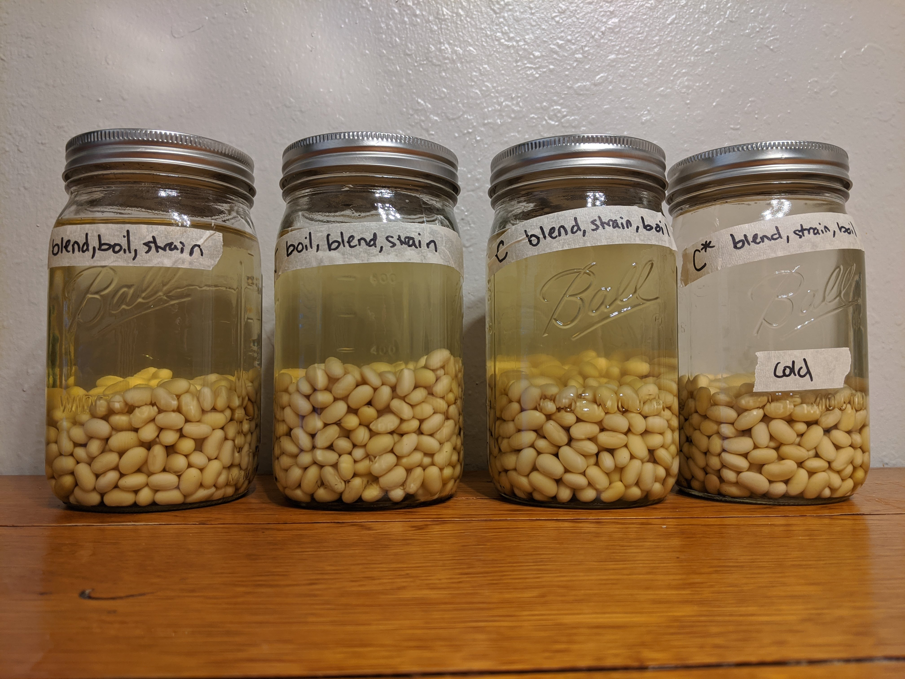
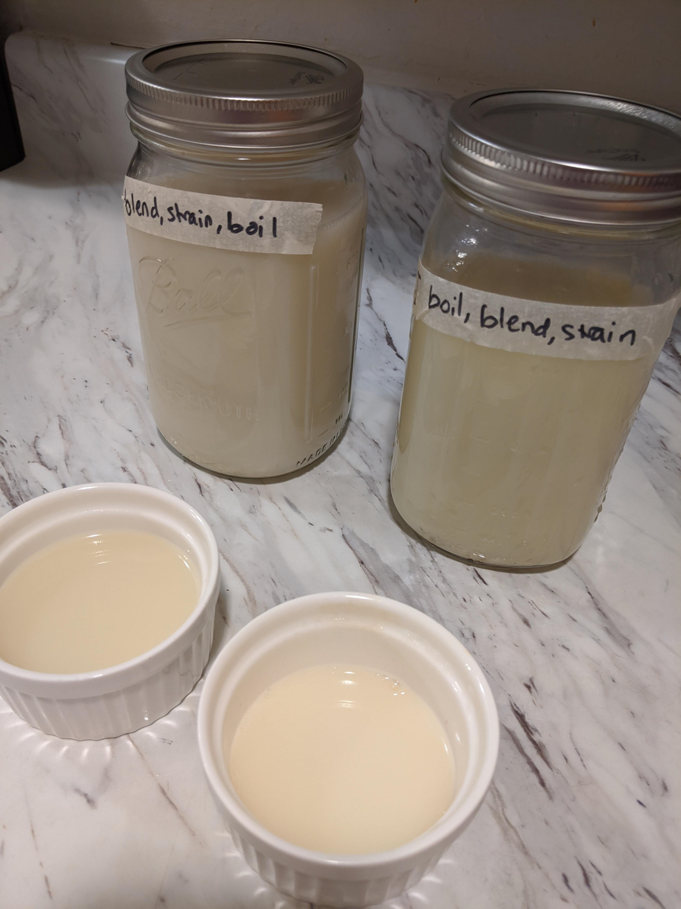
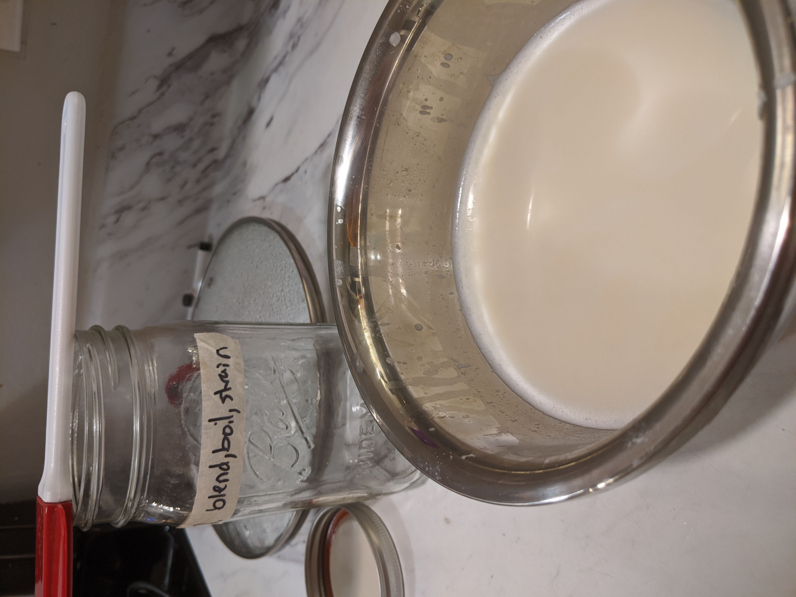

I think I like it
In the midst of a pandemic, it can be difficult to find certain necessities, like milk and toilet paper. While this recipe won’t really help you with the latter, it may help somewhat with the former. It turns out that when the world falls apart, you might not be able to get soymilk from the grocery store, but you can still order 7 pounds of dry soybeans off Amazon. While I’m not quite sure how I feel about the resulting soymilk, that’s why it pairs so well with the Academy-award winning movie Parasite. For both, my final opinion remains somewhat unresolved, but they provide a welcome distraction from the outside world.
Years ago, I tried to make soymilk. There’s a reason I haven’t made it since. Determined to have a more successful bean-milking experience, I scoured the internet to uncover the secrets of soymilk-making. I learned that there are three essential steps: blending the beans, boiling the liquid, and straining out the solids. Remarkably, the resulting soymilk is wildly different depending on the order in which these steps are performed. The difference is caused by the enzyme lipoxygenase, which makes split soybeans produce that “beany” taste when they come into contact with water [
citation]. In my original rag-flavored soymilk failure, I must have neglected to account for lipoxygenase! So I embarked on an experiment to uncover the secrets of non-soybean-flavored soymilk. Which order of the three steps would taste the best?

After producing two more rag-flavoured soy milks (Blend, Boil, Strain and Boil, Blend, Strain), I settled on the above recipe. For a rigorous scientific method, I conducted blind taste-testing (pictured below) on my boyfriend, admittedly without IRB approval. With the addition of oats to thicken it and a bit of flavorings to flavor it, the soymilk was, well, still not as good as Silk, but I think I like it.


And so that brings me to the theme for this blog post: “I think I like it”. Even if arguably years of learning went into this recipe, I’m not sure how I feel about it. Just like the movie Parasite. Another product of quarantine-boredom, I jumped on the bandwagon and watched it. In an effort not to ruin the movie for anyone who has not watched it, it suffices to sum up my feelings about this movie that I am choosing to compare it to this soymilk recipe: after investing a good bit of time, I am left with a bit of a slimy taste in my mouth, not really knowing how to feel.